Four things happen, in this order
Manifold Fedimint Guardian is the guardian software behind Manifold. It runs one Fedimint guardian process per seat you sell, validates against a Bitcoin Core node on the same box, and handles the selling for you. It is not a Lightning wallet, and it does not replace the Bitcoin node: it needs one.
Prepare the box, start the node
umbrelOS or StartOS on a mini PC with a 2 TB SSD, then Bitcoin Core. Its sync takes days, so it goes first and runs in the background.
Install and set up the guardian
The guardian app installs from a store and holds a small fleet of guardian seats. Setup is a four screen wizard in your browser.
Get advertised, sell seats
Once a verifier has authorized your fleet and you have set a price, your open seats are announced on Nostr. A founder in the Fedi app picks a set, pays once, and your box starts one guardian per seat sold.
Earn and withdraw
You receive the seat price up front and a share of that federation's transaction fees for as long as it runs. Both leave to a Lightning address from the Payouts page.
What you need before you start
A guardian is a small, always on server: a mini PC, a Bitcoin node on it, and patience for one long sync. It still needs no public address, no domain and no certificate, because the whole protocol was designed to run from a home connection.
A mini PC with a 2 TB SSD
Any 64 bit Intel or AMD PC; a refurbished corporate mini is the sweet spot. Aim for a quad core, 16 GB of RAM and a 2 TB SSD as the system disk, because the Bitcoin chain lives on it. New box? Prepare the mini PC walks through the one time install. StartOS needs version 0.4.0 stable or later and also runs on ARM servers; umbrelOS is x86 only.
- Wired ethernet to your router. Wi‑Fi will not get you through setup or the sync.
- A laptop or phone on the same network with a browser.
RAM decides how many seats you can sell
Each seat is a separate guardian process, and Bitcoin Core on the same box takes 2 to 3 GB for itself. The dashboard recommends one seat per 1.5 GB of RAM that is free when it starts, capped at 8. You can override the number, but the recommendation is a safe default.
| Box RAM | Seats, node running |
|---|---|
| 8 GB | 2 to 3 |
| 16 GB | 8, the cap |
| 32 GB | 8, the cap, with room to spare |
16 GB is the comfortable minimum for a guardian that also runs its own node.
A Bitcoin Core node on the same box, no public IP
The guardian validates against your own unpruned Bitcoin Core. Bitcoin node installs it; its sync takes days, which is why it comes before the guardian in this guide. Everything on the network side is outbound or hole punched: nothing to forward, no certificate to buy.
- Optional: forwarding UDP 31000 to 31031 on your router improves direct connections between guardians. Without it, traffic falls back to public relays and still works.
A Lightning address for payouts
Everything you earn leaves to one Lightning address or LNURL-pay link that you save once. A bolt11 invoice is not accepted because it is single use.
Someone to authorize your fleet
Founders only see fleets that a verifier has vouched for. The dashboard gives you a public key; a holder signs an authorization over it. A verifier scans that key's QR code with the credential app and publishes the authorization. Arrange your verifier before you start; the FAQ lists where to ask.
Pen, paper, and patience
The wizard shows a 12 word recovery phrase exactly once. Write it on paper before you continue: it is the entire identity of the fleet and its only backup. Plan about an hour hands on, the node sync running for days in the background, and however long the badge takes to arrive.
From a box in a drawer to umbrelOS on your network
Twenty minutes with a screen, once. This is the part most guides skip: nobody mentions that a monitor and a keyboard are needed, once. Written for umbrelOS 1.7.4, the current stable release.
The box
Any 64 bit Intel or AMD mini PC. Refurbished office minis are cheap and quiet: Lenovo ThinkCentre Tiny (M720q, M920q), HP EliteDesk 800 Mini, Dell OptiPlex Micro, Intel NUC. 16 GB of RAM runs the node and the full 8 seats; 8 GB leaves room for 2 or 3.
Fit a 2 TB SSD before you install and install umbrelOS onto it. On umbrelOS 1.x every app, the Bitcoin node included, keeps its data on the disk umbrelOS lives on, so the big disk has to be the system disk. Most office minis take a 2.5 inch SATA or M.2 drive; the Tiny takes both.
Needed once, for the install
- A monitor or TV with HDMI or DisplayPort, and the cable.
- A USB keyboard.
- A USB stick of 4 GB or more. It gets erased.
- An ethernet cable from the box to your router.
- A second computer to download and flash from. Mac users: check you have a USB A port or an adapter for the stick.
Not this
- Wi‑Fi. The install and the app both want a wire.
- ARM boards, phones, Apple silicon. umbrelOS on x86 only.
- umbrelOS 2.0 beta. The downloads page leads with it; stay on 1.7.4 stable for a guardian box.
- Running umbrelOS from the USB stick itself. Install it onto the internal disk.
-
Download the umbrelOS USB installer and check it
Two x86 files exist. You want the USB installer, which copies umbrelOS onto the internal disk. The other one, the plain disk image, runs umbrelOS off the stick and wears it out.
https://download.umbrel.com/release/1.7.4/umbrelos-amd64-usb-installer.isoThen check the download against Umbrel's published checksum. The expected value for this file is:
d30f4e495630b79e946cb6e98cc0f0404a72f69291df5debd7e8908bf106ac40macOS:
shasum -a 256 umbrelos-amd64-usb-installer.iso· Windows PowerShell:Get-FileHash umbrelos-amd64-usb-installer.iso· Linux:sha256sum umbrelos-amd64-usb-installer.iso. The full list is atdownload.umbrel.com/release/1.7.4/SHA256SUMS. -
Flash it to the USB stick
balenaEtcher›Flash from file›the .iso›Select target: your stick›FlashGet balenaEtcher from etcher.balena.io. On Windows, Rufus does the same job. Everything on the stick is erased.
-
Plug in and open the BIOS
Connect monitor, keyboard, ethernet and the stick. Unplug any external drive so you cannot install onto it by mistake. Power on and tap the setup key at the maker's logo: Lenovo F1, HP Esc then F10, Dell F2, Intel NUC F2.
-
Three settings, then save
Secure Boot: Disabled. umbrelOS's bootloader is unsigned; with Secure Boot on, the stick will not boot and you get a "Secure Boot Violation". On a Lenovo it is under Security. Keep UEFI; do not switch to Legacy or CSM. After power loss: Power on (Lenovo: Power › After Power Loss), so the box comes back by itself after an outage. A guardian that stays off until someone presses a button is a guardian that is down. Save and exit, usually F10.
-
Boot from the stick
Open the boot menu at the logo: Lenovo F12, HP F9, Dell F12. Pick the entry that starts with UEFI: and names your stick, not a plain "USB HDD" entry.
-
Install onto the internal disk
The installer lists the disks it found. Type the number of the internal SSD, recognised by its size (about 238 GB for a 256 GB drive, about 1.8 TB for a 2 TB one), never the stick. If you fitted a 2 TB SSD for the Bitcoin node, this is the moment it matters: pick that disk. It starts writing immediately, without a confirmation. When it reports that umbrelOS has been installed: power off, remove the stick, power on.
-
First boot and account
Give it about five minutes. On your other computer open
http://umbrel.local. On Windows tryhttp://umbrel, or find the box's address in your router's device list and open that. Create the account and put the password in a password manager: on Umbrel it is also what protects the guardian dashboard. In Settings, install any 1.x update it offers. -
Unplug the screen, fix the address, walk away
Monitor and keyboard can go. In your router, give the box a fixed address (a DHCP reservation) so
umbrel.localkeeps resolving after reboots. A small UPS is worth it if your power is unreliable. Then continue with Install.
Install the Bitcoin node first and let it sync while you do the rest
A mainnet guardian validates against a Bitcoin Core node you run on the same box, unpruned. The initial sync is the slowest step of the whole setup, one to three days on an SSD and one to two weeks on a spinning USB disk, so it comes first: start it now, then carry on with the guardian install and setup while it runs. Nothing later waits for it, except selling your first seat.
Disk: 2 TB, and it must be the system disk
The unpruned chain is about 760 GB today and grows 60 to 80 GB a year. A guardian cannot run pruned. On umbrelOS 1.x apps keep their data on the disk umbrelOS was installed to, so the 2 TB SSD has to be the one you installed onto. If umbrelOS is already on a small drive, fit the SSD and reinstall; a guardian comes back from its 12 words.StartOS keeps services on its data drive too, so install StartOS onto the 2 TB SSD.
Time: leave it on and wired
Expect one to three days on an internal SSD with a decent connection, one to two weeks on a spinning USB disk, longer on Wi‑Fi or a metered line. The box must stay on the whole time; the After Power Loss BIOS setting from the mini PC section is what makes that survivable.
What to keep at the end
Three values the mainnet package will ask for: the node's RPC address, RPC username and RPC password. Put them in your password manager the day you set the node up.
-
Check the disk before anything else
umbrelOS›Settings›StorageYou need about 1 TB free today and 2 TB to be comfortable for years. Less than that means the node fills the disk mid sync and stops. If the number is too small, go back to Prepare the mini PC, fit the SSD, and reinstall onto it.
-
Install the Bitcoin Node app
App Store›Bitcoin›Bitcoin Node›InstallThis is Umbrel's official app, powered by Bitcoin Core, in the main App Store rather than the Fedi Dev one. Version 1.4.0 (Sep 2026) ships Bitcoin Core v31.1. It starts syncing the moment it is installed.
-
Five settings to check, once
Bitcoin Node›SettingsThe app has over twenty advanced settings. Only these matter for a guardian:
Setting Value Why Prune Old Blocks Off A guardian needs the full chain. Turning pruning on later throws blocks away that you would have to download again. Bitcoin Network Mainnet The default; the guardian needs the main network. Bitcoin Core Version Always use the latest version Keeps the node current; v31.1 as of September 2026. Enable Transaction Indexing On Fedimint's reference Bitcoin Core configuration exposes the transaction index as a switch, and guardians look transactions up by id. Turning it on after the sync forces a re-index that takes hours; during the sync it is free. Cache Size 2000 MB on a 16 GB box, 1000 MB on 8 GB Speeds up the initial sync noticeably. You can lower it again afterwards. Leave Max Upload Target alone unless your line is metered, and leave the peer connection settings on their defaults. Changing settings restarts the node, which pauses the sync for a minute.
-
Watch the sync, and know how to read it
The app's home screen shows the current block height, a Synchronizing percentage and the peers it is connected to. The percentage misleads: it is weighted by transactions, and early blocks hold almost none, so it sits under 1 percent for the first day while the block count climbs past hundreds of thousands, then races through the last years. Watch the block height instead and compare it with a public explorer such as mempool.space; when the two numbers match, the sync is done.
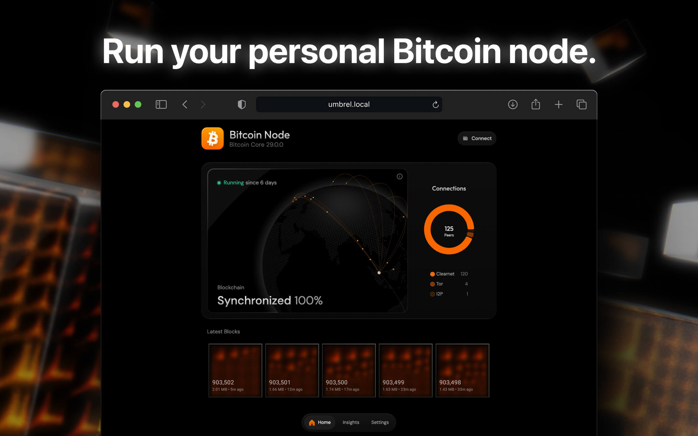
What a synced node looks like. Umbrel's Bitcoin Node app once it has caught up: Synchronized 100%, peer connections, latest blocks. Image from the app's store listing.
-
Copy the RPC details
Bitcoin Node›Connect›Bitcoin Core RPCThe Connect panel shows Host, Port (8332), Username and Password. These are the credentials the mainnet guardian package will ask for. Store them now. The password is generated by the app and always visible here, so it cannot be lost, but a reinstall of the app generates a new one.
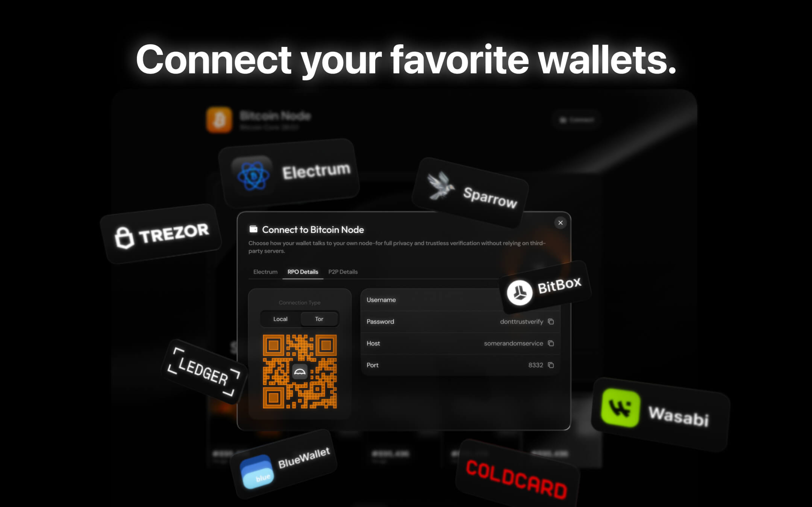
The Connect panel. RPC Details is the tab with the username, password, host and port. Image from the app's store listing.
-
Done when
- Block height matches the explorer and the app no longer says Synchronizing.
- Prune Old Blocks is off and the disk still shows at least 10 percent free.
- Host, port, username and password are in your password manager.
- The box has been left on since; a node that is switched off falls behind and has to catch up before a guardian can use it.
-
Install Bitcoin Core from the Start9 registry
StartOS›Marketplace›Bitcoin Core›InstallStart9's own package, Bitcoin Core v31.1 (release v31.1_16, Sep 6, 2026). It installs onto the StartOS data drive, so that drive has to be the 2 TB one.
-
Turn pruning off before the sync gets far
Bitcoin Core›Actions›ConfigStart9's package prunes automatically by default, sized to the free space. A guardian needs an archival node, so open the config, find the pruning option under the advanced settings and turn it off. Enable the transaction index in the same place if it is offered. Changing pruning after the fact triggers a full re-index, so do this first.
-
Watch the sync
The service page shows the block height and sync state. Start9 quotes "under a day to several days" depending on hardware and bandwidth; a spinning USB disk stretches that to weeks. Compare the block height with mempool.space; matching numbers mean done.
-
Copy the RPC credentials from Properties
Bitcoin Core›PropertiesProperties shows the RPC username and password (and a QuickConnect code for wallets). Store them; the mainnet guardian package will ask for them. If a password is ever lost, the Delete RPC Users action removes the old user so a new one can be created.
Install on Umbrel
Install on Start9 (StartOS)
The guardian software is published in a community app store, so Umbrel installs and updates it like any other app. Umbrel's own login protects the dashboard, so there is no extra password.
StartOS installs the package from a single file you download from GitHub and sideload. The dashboard has its own generated password, shown by an action inside StartOS.
-
Have umbrelOS running and open its dashboard
Install umbrelOS on the box if you have not (umbrel.com/umbrelos: flash a USB stick, boot the box from it, follow the on screen setup). Then open the Umbrel dashboard from a browser on the same network and sign in.
-
Add the Fedi Dev community app store
App Store›⋯ menu, top right›Community App StoresPaste this address and click Add:
https://github.com/fedibtc/manifold-umbrel-store.gitThe store is public. Nothing to log into and no token to paste.
-
Install Manifold Fedimint Guardian
Open the new Fedi Dev store and install Manifold Fedimint Guardian. The store tile shows its technical name, Fleet Manager; it is the same app. Umbrel pulls the image from GitHub's registry; the first pull takes a minute or two.
-
Open the app
Click the app tile. The dashboard opens behind Umbrel's own login, so you are already signed in. It lands on the setup wizard described in the next section.
Known quirk. The screen before the wizard may briefly flash an[object Object]error. It is a display bug; the wizard works. Reload if it does not appear within a few seconds.
-
Make sure StartOS is on 0.4.0 stable or later
System›Software UpdateOn a 0.4.0 beta build the sideload page fails with an
alerts is undefinederror. Update the OS first.Bare mini PC? StartOS installs like umbrelOS does: download
x86_64.isofrom Start9's releases, flash it with balenaEtcher to an 8 GB stick, boot from it with Secure Boot off, and run the setup wizard athttp://start.local. Start9's guide: docs.start9.com › flashing guides › x86. The mini PC shopping list and BIOS settings in this guide's Mini PC path apply to StartOS too. -
Download the package file
From the latest release of the packaging repo, download
fedi-dev-fleet-manager_x86_64.s9pk(about 53 MB). ARM servers take the_aarch64.s9pkfile instead. -
Sideload it
Top navigation bar›SideloadDrop the file in and wait for the install to finish. The image is embedded in the file, so the box never pulls from a registry.
-
Start the service and wait for the health check
Start the Manifold Fedimint Guardian service (listed under its technical name, Fleet Manager) and wait until the Operator Dashboard health check turns green.
-
Get the dashboard password
Actions tab›Show Dashboard PasswordCopy it. StartOS has no authenticating proxy in front of apps, so the dashboard protects itself with this generated password.
-
Open the dashboard and sign in
Use the interface's address entries, the Local
https://…one, and accept the self signed certificate warning (unless you have installed your server's root certificate). Enter the password on the Sign in screen.Known StartOS quirk. If you browse StartOS from the server itself (a kiosk, or a browser inside a VM), the Open button builds a dead127.0.0.1link. Use the address entries instead.
The four screen setup wizard
Setup happens once, in the dashboard. Every step is saved as you go, so a closed tab or a restarted box resumes where you left off. The same four screens on Umbrel and Start9. The dashboard still uses the technical name in a few of its own labels; read them as Manifold Fedimint Guardian.
-
SCREEN 1
Choose: a new fleet, or recover one
Two doors. Start a new fleet generates a fresh recovery phrase and starts with no seats. This is the usual choice. Recover from your phrase rebuilds a fleet whose original host is gone, from its 12 words, and brings its seats back with it.
Recovery is only offered here. Once a host is set up, the choice is made and cannot be revisited on that host.
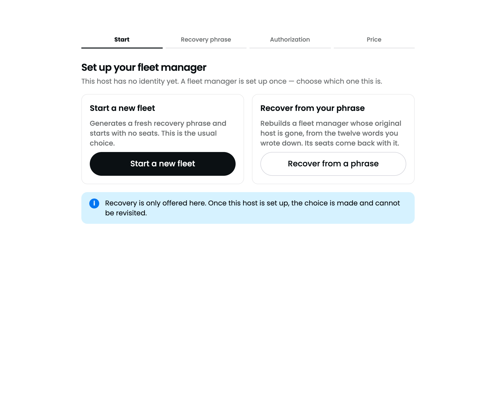
-
SCREEN 2
"Record your recovery phrase"
Click Reveal phrase and write the 12 words down on paper, in order. They are never stored in the browser, and there is no other backup: losing them loses every seat's guardian identity. Then click I've written it down, continue.
Do not photograph or type the phrase anywhere. Anyone holding these words owns your fleet and everything it earns. You can reveal them again later from the Backup page if you need to check your copy.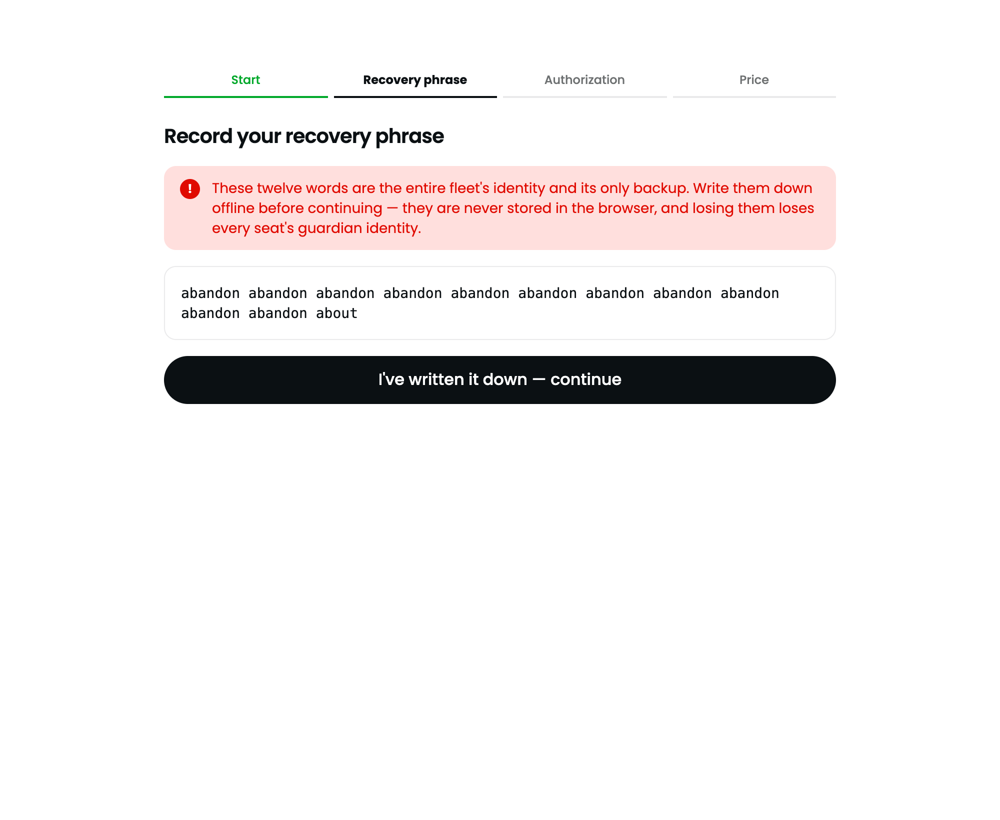
-
SCREEN 3
"Get this fleet authorized"
The screen shows a QR code and your fleet's service Nostr public key (a 64 character string). A holder signs an authorization over this key; until one exists, founders have no way to evaluate you, so this step cannot be skipped.
Show the QR code to your verifier, who scans it with the credential app, or click Copy the authorization request and send them the copied request to paste in. Once they have signed and published it, click Check now. The wizard does not poll in the background, so nothing happens until you click.
When the relay carries your authorization the status changes to "Authorization observed" and the wizard moves on to the price step by itself after two seconds.
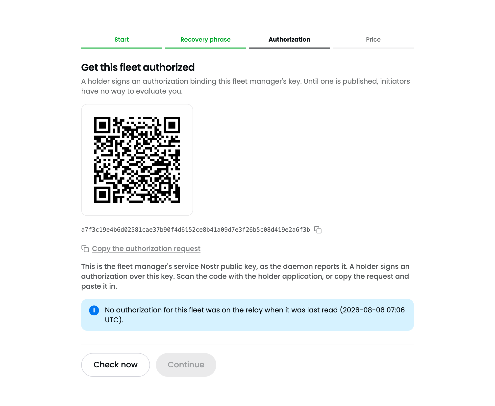
-
SCREEN 4
"Set your price"
Maximum active seats is prefilled with the RAM based recommendation; lower it if the box does other work. Price per seat (sats) is the whole offer: the gross amount a founder pays for one seat, before mint and Lightning fees. The dashboard suggests the equivalent of $2 to $3; a lower price fills seats sooner.
Click Finish setup. Leaving the price blank finishes setup without selling anything; you can set a price any time from the Overview.
Expect "Loading…" for about two minutes after this step. The fleet joins the network's shared setup payment federation, the one founders pay you through, and scans its history once. It only happens the first time.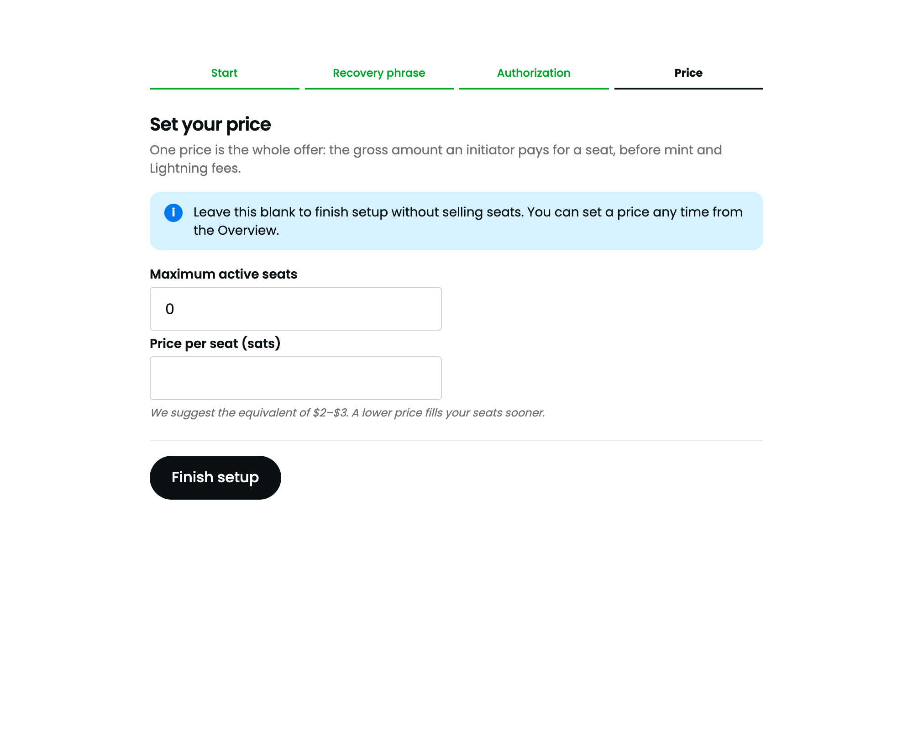
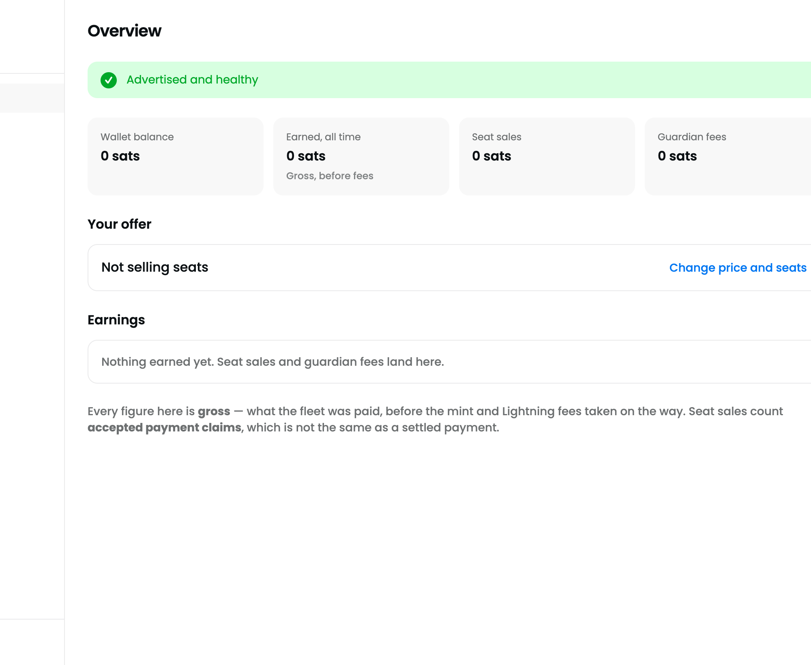
Overview right after setup. Zero everywhere is normal. The next section is about getting from here to the first sale.
Three conditions, then one restart
A fleet is invisible to founders until it has an authorization, a price, and a wallet that can receive payment. The dashboard shows all three. Then the software publishes your advertisement and keeps it fresh on its own.
- Authorization observed. Open Authorization in the left menu. It should list at least one holder under "Observed holders". This is the badge from screen 3.
- A price is set. The Overview's "Your offer" card shows a price per seat rather than "Not selling seats". Change it any time with Change price.
- The wallet can receive. Open Wallet. At least one payment federation should be listed. You did not add it and cannot remove it: membership follows the network's published setup payment policy, and the fleet joins automatically.
- Restart the app once. Umbrel: open the app tile's ⋯ menu and choose Restart.StartOS: Stop the service, then Start it again. The advertisement loop stays quiet while the wallet is still joining and nothing wakes it when the join lands. A restart publishes immediately.
- Confirm. The Overview banner reads Advertised and healthy. That is the whole check. Anyone can additionally see your advertisement (a kind 37701 Nostr event) published from your service Nostr key on the Manifold relay.
What happens when someone buys your seat
You do nothing. Founders pick, pay and form the federation from the Fedi app; the fleet accepts, starts a guardian and reports. Here is what you will see, and where the money comes from.
-
A founder assembles a guardian set
In the Fedi app the founder opens Wallets, taps Create, and the app assembles a set of guardians from advertised fleets: cheapest first, then most free slots. One founder buys at most one seat from your fleet per federation.
-
They pay once, for the whole set
The founder pays the total in ecash through the shared setup payment federation. Your fleet receives your seat price, gross, before mint and Lightning fees. Every offered seat accepts automatically once a valid payment lands; there is no approval step and no "create seat" button on your side.
The Overview counts this as an accepted payment claim, which is not yet the same as a settled payment. The fleet reconciles the claim in the background and the Wallet balance follows.
-
A seat appears and forms the federation
Open Seats. The new seat moves from Created to DKG (the guardians generating their shared keys) to Running. From then on your box is one of that federation's guardians. Click a seat for its detail page: federation, health, fee policy and payment evidence.
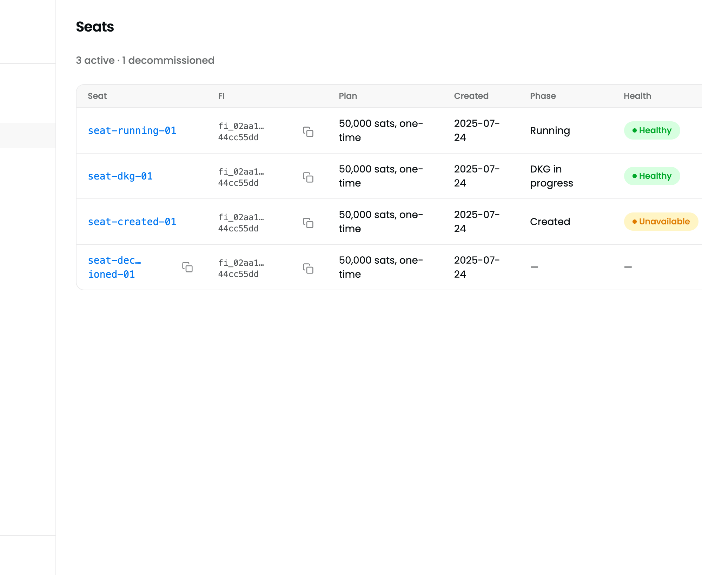
-
Fees accrue for as long as the federation runs
Every transaction members make inside the federation pays a small fee, split by a fixed rule: the founder holds 4 shares, each guardian 1 share, and Fedi 1 share, so a federation with 10 guardians has 15 shares and you hold one of them. The rate starts at 0.5% (5,000 ppm) and the founder can change it within the network's bounds. Your share is remitted into a per seat fee account that you collect from Payouts.
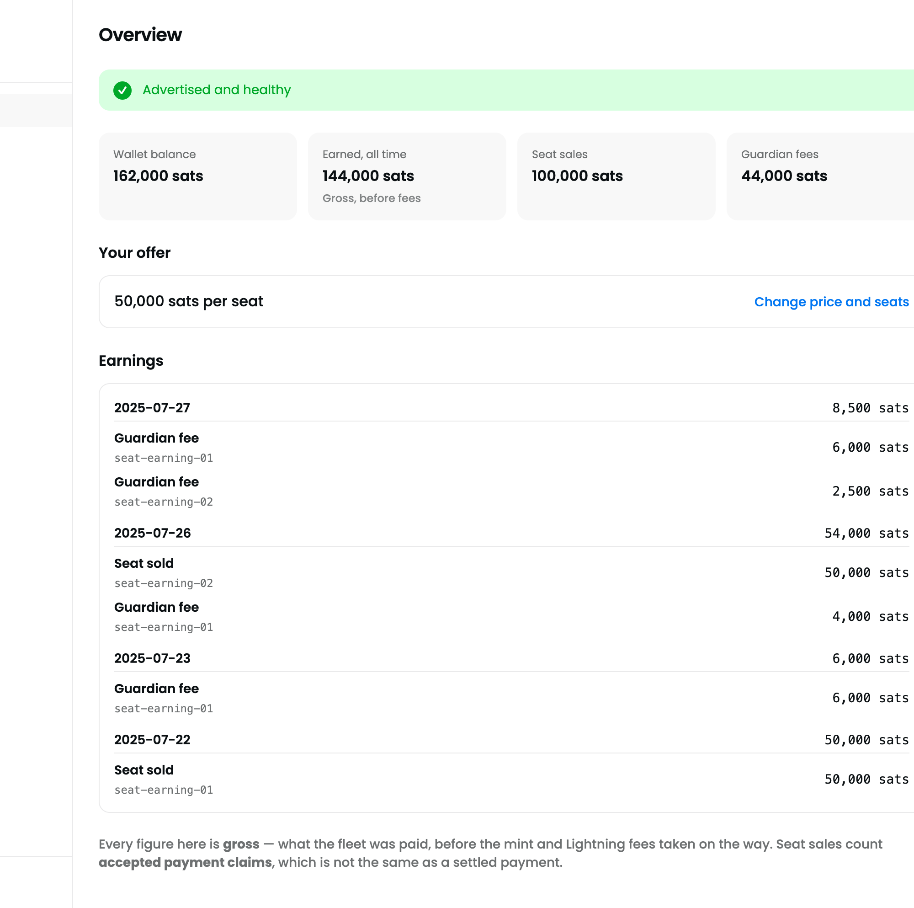
Overview with revenue. The four tiles are Wallet balance, Earned all time, Seat sales and Guardian fees. Everything is gross. The Earnings list groups seat sales and fee remittances by day. A dash means the fleet could not read that figure yet, not that it is zero.
Payouts: one destination, two kinds of revenue
Payouts is the only page where money leaves the fleet. It is ordered the way the software is: destination first, then seat sales, then guardian fees. A sweep always sends the largest amount the wallet can economically fund, through a gateway the software selects. There is no amount to type and no gateway to pick.
-
Save a payout destination
In the Payout destination card, paste a Lightning address or LNURL-pay link (for example
you@wallet.example) and click Save destination. Every sweep reuses it. A bolt11 invoice is refused because it can only be paid once. -
Sweep seat sales
The Seat sales table lists each payment federation your fleet has been paid through, with its balance. Click Sweep on a row. A small residue can stay behind when notes cannot cover the fees; that is expected and it is swept with the next sale.
-
Collect, then send guardian fees
Guardian fees take two clicks per seat, because the money first has to be released from the federation's fee pool into ordinary ecash: 1. Collect out of the pool, then 2. Send to destination. Part of a collection can stay locked until the federation's next cycle; the dashboard shows it as awaiting the cycle and you collect it next time.
Collecting works without a destination, since it moves money inside the fleet. Sending does not.
-
Keep the operation id
Each sweep shows an operation id with a copy button. It is the reference support will ask for if a payment needs tracing. The Wallet page stays read only: balances per payment federation, nothing to configure.
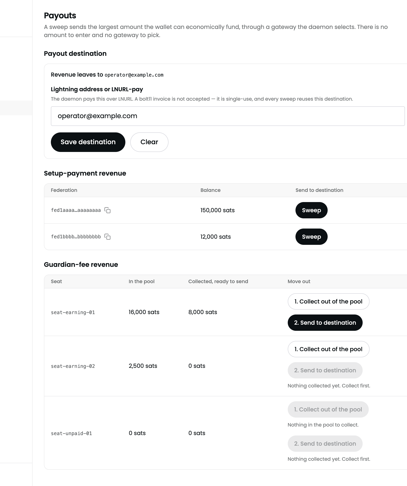
Payouts with revenue on both sides. Destination at the top, then per federation seat sales, then per seat guardian fees with their two step buttons.
A guardian's only job is to stay up
Every running seat is one of the guardians a real federation depends on. Nothing needs daily attention, but these six things are yours to own.
Updates are manual, and due the day the network asks
Umbrel shows an Update button on the app once the store has a new version.Download the new .s9pk from the releases page and sideload it again. When the network names a newer release than yours, the dashboard takes the screen over with a notice; out of date fleets show up in the app as "not enough guardians" or "unauthorized request". Data survives updates, not uninstall.
Keep the node synced
The guardian is only as current as its Bitcoin node. The Bitcoin Node app updates like any other app, and after an outage it catches up by itself. If a federation reports trouble, check the block height against mempool.space before anything else.
The 12 words are the whole backup
Every key is derived from them and your seat records are published, encrypted, to the relay. The Backup page shows your fleet name, keys, and a Reveal recovery phrase link. Nothing else to export.
One phrase, one host
Recovery is only possible while setting up a fresh host ("Recover from your phrase"). Never run two boxes from the same words: two guardians with one identity would contradict each other and break the federation.
Change price and capacity any time
Overview › Change price. A blank price stops selling; 0 gives seats away and keeps you advertised. Seat capacity is on the same page and can never go below the seats already active.
Decommission is a last resort
Founders pay once for open ended hosting. You can decommission a seat, but there is no refund mechanism and the federation loses a guardian. Price the disk and uptime you are promising into the seat price instead.
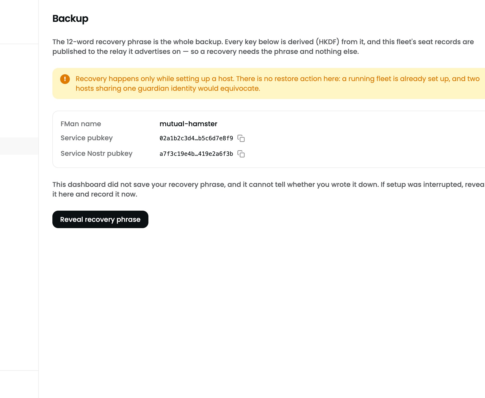
Backup. Name, service key, service Nostr key, and the phrase behind a deliberate extra click.
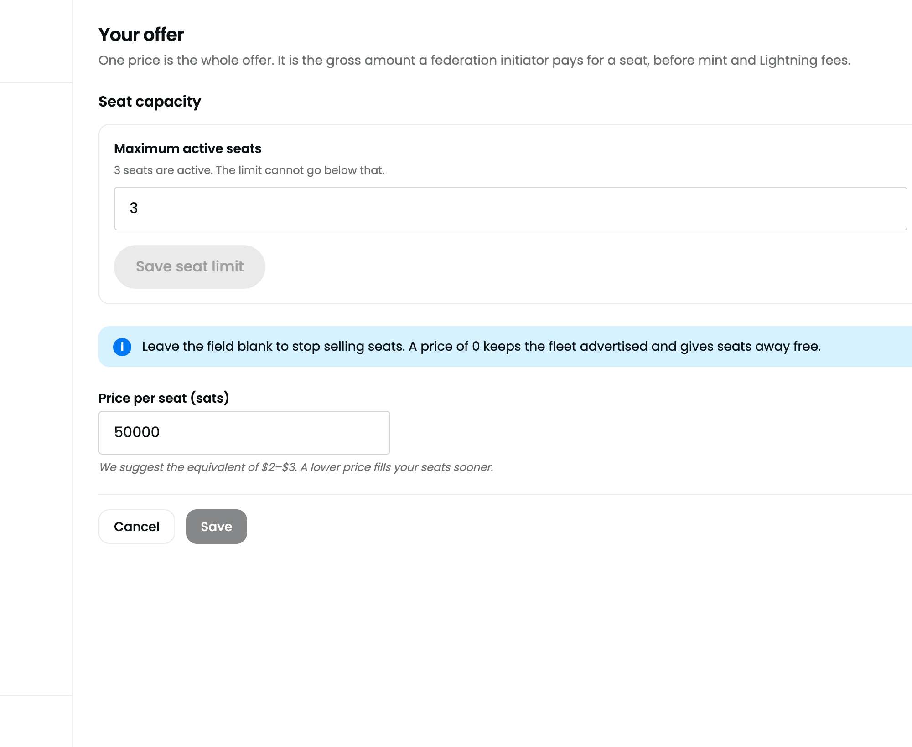
Your offer. Seat capacity and price are saved separately; each change re-issues the offer to founders.
When something looks wrong
Most of these are waits, not failures.
[object Object] error before the wizardFrontend rendering bug on the pre setup screen.Ignore or reload. The wizard still works.http://umbrel, or the box's IP from your router's device list. Check the cable.Questions people ask before they start
Do I need a public IP address, a domain, or a certificate?
Do I need to run Bitcoin Core or Lightning?
Can I choose which federations I host?
How much will I earn?
What if I lose the 12 words?
Can I move my fleet to a new box?
Can I run more than one fleet, or raise the seat count later?
fman-cli capacity set N); it just cannot drop below the seats already active.Where do I get help?
Where every statement on this page comes from
Checked against these on Sep 11, 2026.